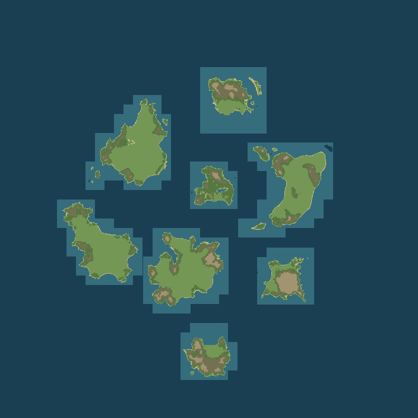

Seed 19412
V-511237A4 · Szenario · History Edition
704 × 704 Felder · 8 Inseln · 1 Spielstände
Lord Morima · KI: Hekata, Hildegard von Lewenstein, Marie d'Artois, Profil 1645000, Profil 1645001
- Ältester Save
- demo-03.sww
27.06.2020 14:13:47 - Neuester Save
- demo-03.sww
27.06.2020 14:13:47 · 1:05:32 - Längste Spielzeit
- demo-03.sww
27.06.2020 14:13:47 · 1:05:32
Karteneinstellungen
- Zufallskarte beim Start
- 0
- Weltgrösse
- 1
- Inselgrösse
- 1
- Inselschwierigkeit
- 0
- Fruchtbarkeiten
- 2
- Rohstoffe
- 2
- Neutrale Gebäude
- 0
- Korsaren
- 0
- Schwierigkeit
- 1
- Missionsschwierigkeit
- 0
- Kontor zu Beginn
- 0
- Startschiffe
- 1
- Startkapital
- 1
- Startruhm
- 0
- Startitems
- 0
- Aufgedeckte Karte
- 0
- Auftragshäufigkeit
- 1
- Rückerstattung beim Abriss
- 2
- Spionage
- 0
- Ratsitze
- 0
- Händleraufträge
- 1
- Friedensvertrag zu Beginn
- 0